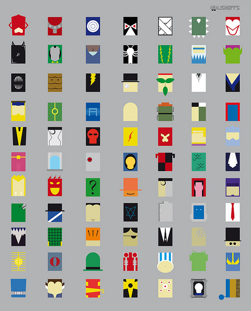
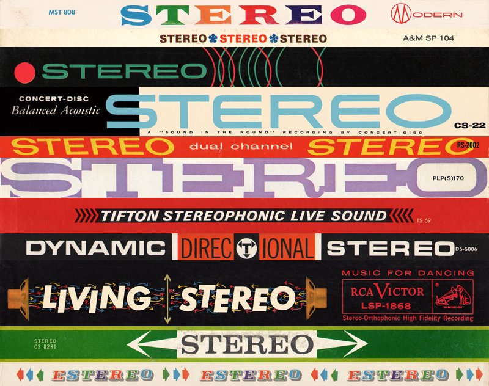
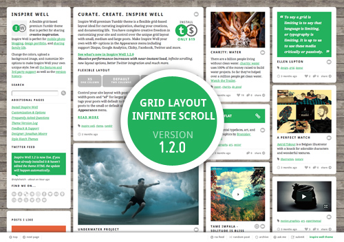

November 2010
11/30/2010 15:44:07
¶
●
Answered by Dennis Crowley co-founder of Foursquare
Here is a summary of the five pieces of advice, but make sure you click through to get all the nuggets of wisdom.
- Stop sketching and start building.
- Don’t let people tell you your ideas won’t work.
- Build early and often.
- Don’t let a lack of technology get in the way.
- Hire the best people you can find.
Follow Dennis on Tumblr
#entrepreneurship #action #Business
11/30/2010 12:32:06
¶
●
Hacking Xbox Kinect—Interactive Puppet Prototype
It has been only a few short weeks since the Xbox Kinect was released, but already you can find a number of people hacking the Kinect to create really interesting experiences and prototypes. This interactive puppet prototype was put together in one day by the talented Emily Gobeille and Theo Watson of Design I/O. This Kinect prototype uses the opensource packages openFrameworks and OpenKinect.
See these other amazing Kinect hacks…
#kinect #hack #interactive #dev #Experimental
11/30/2010 09:45:06
¶
●

URSA MAJOR of Vermont
“We are Ursa Major, The Great Bear. We make stellar skincare products for men who live.” Austin based design studio PTARMAK created this fantastic identity package for the new men’s skin care line URSA MAJOR. I’m always a sucker for natural textures and simple overlays.
Found on Graphic Exchange
#design #branding #nature
11/30/2010 08:03:06
¶
●

Minimalism Villains
…or superhero enemies. How many can you identify?
Designed by illustrator Fabian Glez. Also check out his Minimalism Heroes poster.
Reblogged from Carbonmade
#Illustration #minimal
11/30/2010 07:30:18
¶
●
Live out of your imagination, not your history.
Stephen R. Covey
#imagination #life
11/24/2010 11:26:19
¶
●
We All Want to Be Young
Looking at the current Millennial generation and how they compare to the Baby Boomer and Generation X generations Brazilian research company BOX1824 created the short film “We All Want to Be Young” as a part of their 5 year study into behavioral sciences and consumer trends.
Today being normal has become boring, and in spite of neutralizing differences it is cool to express them. It is possible to be a surfer, dj, rocker, nerd, cinephile, designer at the same time. We’re talking about the most plural youth generation in history. It is a plurality which guarantees that the young can simultaneously recognize themselves even with their personal differences.
#youth #culture #psychology #trends
11/23/2010 13:09:29
¶
●
Refraction
An iPhone shot through a glass plate of oil and water and filmed with a Canon 5D Mark II and 100mm f/2.8 macro lens. Simple execution and beautiful results from Jessee Zanzinger.
What are you creating?
#macro #cinematography #iphone #creative
11/23/2010 09:42:27
¶
●
With the recent 4.2 update for the iPad and iPhone Apple quietly added a number of new features to mobile Safari. Mobile Safari now has direct support for the accelerometer, gyroscope, HTML5 web sockets, updated HTML5 form support, new Javascript data types, updated DOM events, and enhanced SVG and Canvas support.
Also it appears that mobile Safari now has far better support for @font-face switching from preferring SVG fonts to TTF fonts. This one change now opens up the door to using Google Fonts on the iPad without crashing the browser. With some initial testing it looks like I’ll be able to update the Inspire Well theme to re-enable the use of Google Fonts on the iPad.
From the comments:
@font-face has worked for a long time on iOS given some specific caveats. However, the new news on web fonts in 4.2 is that iOS now prefers the TTF version of a font over the SVG version (formerly SVG was the only format supported.)
The other nice thing about web fonts on 4.2 is that they now work in offline webapps. This was a big deal for me and I only discovered it by luck. Still; this will be a pretty handy feature for a lot of folks I think.
#iphone #ipad #safari #dev #style hatch
11/19/2010 09:11:07
¶
●
Apple Destroyed
After smashing an iPod Touch that his two boys constantly fought over artist and former Apple employee Michael Tompert realized he should do something with this piece of technology as liquid poured out of the shattered screen. The series of photographs were recently featured in a small San Francisco Gallery, Small Worms Gallery.
From an art critic’s point of view, the destroyed gadgets contain strains of Dadaism and Surrealism. Everyday products are turned on themselves and made to seem unfamiliar again.
Images found on Fubiz and full story on Michael Tompert and his art on LA Times.
#art #photography #technology #apple
11/18/2010 10:41:31
¶
●
Wake Up Early
Excellent article from 99 Percent on how rising early to start your day will lead to better productivity and a greater sense of control over your day.
When I interview creatives, I often ask them what advice they would give to the next generation, the up-and-comers. Curiously, there’s one incredibly important habit that nearly all of them possess that is almost never mentioned. So what is the secret ingredient in their productivity regime? It’s simple: They get up early.
Over the next two weeks I’m going conduct an experiment and try several techniques to shift my schedule to early mornings verses late into the night, define a consistent work schedule, boost my focus on one thing at a time, and get better at keeping a todo list. During this process I plan on writing about my personal reasons for the experiment, some of the techniques I’m trying and of course the results. Wish me luck!
#FOWD #action #Productivity #Creativity
11/17/2010 07:57:39
¶
●

Stereo Stack
Visual stack of vintage LP stereo labels collected and curated by Project Thirty-Three. More proof that what is old becomes new again, especially when it comes to design styles.
#design #vintage #Typography
11/15/2010 12:32:15
¶
●
The more constraints one imposes, the more one frees one’s self. And the arbitrariness of the constraint serves only to obtain precision of execution.
Igor Stravinsky
This quote summarizes one of the many things I love about the Tumblr platform. When designing a theme for Tumblr the simplicity of the Tumblr feature set provides an excellent constraint that helps us (Style Hatch) focus on “precision of execution”.
Via Jonathan Snook’s presentation “The Future of Cross-Platform Front-End Development” at FOWD NYC.
#tumblr #simplicity #style hatch
11/12/2010 14:48:08
¶
●
Great looking CSS grid framework by Andy Taylor that is designed for 1280px wide monitors, but scales all the way down to mobile resolutions. Don’t be surprised if this ends up in a future Style Hatch premium Tumblr theme.
Next week I’ll post more details about several of the upcoming themes that’ll be launching soon. Lots of exciting projects in the works!
#dev #tumblr #css #grid
11/11/2010 09:55:35
¶
●
To Live And Skate Kabul
Short documenary about the charity organization and skateboarding school Skateistan that works with girls and boys in Afghanistan between the ages of 5 and 17, an age group largely untouched by other aid programs.
#skateboarding #good #nonprofit #culture
11/11/2010 09:43:07
¶
●
The possibilities are numerous once we decide to act and not react.
George Bernard Shaw
#action
11/10/2010 12:47:01
¶
●
New York City - Timelapse
Alexandre Favre, Pierre Dumont and David Mignot captured over 13,000 images of New York City during the summer of 2009 to create this colorful timelapse.
Next week I’ll be in NYC for the Future of Web Design conference and to meet a few of the guys at Tumblr. If you’re in the city let me know—love to meet up with as many people as possible.
#time-lapse #nyc #photography #travel
11/10/2010 12:33:20
¶
●
Good Design Is…
- Good design is innovative
- Good design is complex
- Good design is simple
- Good design is clever
- Good design is full of emotion
- Good design is fades into the experience
- Good design is paying attention to every detail
What is good design to you?
#design
11/08/2010 22:31:12
¶
●
So don’t let all the news of the day slow you down. Don’t let your competitors press releases and launch parties get inside your head. Plan, build, ship, and scale. Assess. Repeat again and again. Win.
A VC: Your Worst Enemy Is Yourself (via heyamberrae)
#action #business #focus
11/08/2010 21:10:00
¶
●
Casteller
Every two years people gather together in Tarragona, Spain to an attempt to out build other teams with the highest human castles. Freelance photographer and writer Mike Randolph captures the colorful sea of men, women and young kids building intricate towers. More on the Castell tradition from the 1700s.
Via Marc Hemeon
#travel #culture #spain #photography
11/08/2010 14:54:42
¶
●
A 1995 essay in Newsweek predicting that the Internet will end up being a big flop that will never take off.
Then there’s cyberbusiness. We’re promised instant catalog shopping—just point and click for great deals. We’ll order airline tickets over the network, make restaurant reservations and negotiate sales contracts. Stores will become obselete. So how come my local mall does more business in an afternoon than the entire Internet handles in a month? Even if there were a trustworthy way to send money over the Internet—which there isn’t—the network is missing a most essential ingredient of capitalism: salespeople.
Reblogged from Rick Webb
#internet #technology #predictions
11/08/2010 14:22:28
¶
●
Hate/Love
Right now I hate/love this business. I hate/love this work. I hate/love this project. I hate/love these ideas.
It’s all up to your and your work.
Created for the 2010 Advertising and Design Club of Canada (ADCC) Awards. See the full opening credits.
Thanks Bran for showing me this one.
#advertising #design #agency
11/08/2010 12:57:10
¶
●
When Ideas Have Sex
Frog Design looks the way that ideas travel, reproduce and evolve in human history in their first essay for Fast Company. They make the case that the ability for humans to exchange ideas is key human invention.
In every case it was openness to exchange, within and among nations, that drove innovation (and predation by chiefs, priests, and thieves that shut it down). The same is true today. Countries that open their borders to the free exchange of goods and services and ideas and innovations flourish, while those that cut themselves off and seek economic self-sufficiency stagnate.
Read the entire essay on Co.Design.
#innovation #ideas #technology
11/03/2010 12:54:07
¶
●
No is easier to do. Yes is easier to say.
Jason Fried
#action #business
11/02/2010 14:05:17
¶
●

Art Direction and Design
Senior Designer at New York agency Big Spaceship, Dan Mall explains the roll of art direction and how it relates to the design process in the most recent A List Apart article.
Often designers simply view the roll of art director simply as an advanced designer, but art direction goes beyond crafting well developed designs. It lays the foundation to provide an emotional connection to the brand. Providing art direction is a balance between empathy for the viewer and keeping the visual message true to the brand. If you’re looking to move into an art director roll or progress in your design career take the time to read this well written article.
#design #art direction #career #brand
11/02/2010 11:44:20
¶
●

Inspire Well 1.2 Now Live - 440% Faster
This morning a major update to the Inspire Well theme finally went live. With large portions of the theme rewritten and converted to HTML5, the latest update focuses on speed, performance and better layout. After checking the “Use progressive load” option in the Appearances menu you posts should display and layout in the grid almost instantly without waiting on the loading menu. By shaving seconds and milliseconds off the load time Inspire Well now loads up on average 440% faster.
To help with testing and to demo the new infinite scroll option I installed Inspire Well 1.2 on my personal Tumblr site for the day—http://jonathanmoore.com.
If you have already installed Inspire Well and haven’t made any changes to the theme HTML your site has already been upgraded to 1.2.
#tumblr #theme #inspire well #style hatch
11/01/2010 13:41:31
¶
●
Yesterday NYTimes.com launched a new blog DISUNION covering the daily unfolding events of the Civil War—150 years after it happened.
DISUNION
One-hundred-and-fifty years ago, Americans went to war with themselves. Disunion revisits and reconsiders America’s most perilous period — using contemporary accounts, diaries, images and historical assessments to follow the Civil War as it unfolded.
#history #blog #america
11/01/2010 09:39:35
¶
●
Co-Founder of Tumblr and the one-man-force behind Instapaper.
#entrepreneurship #work #Business
11/01/2010 09:32:10
¶
●
If you emerge from university today with a web design degree, chances are rather slim that you’re employable as a user experience (UX) or web designer. Maybe you learned a lot of stuff; it’s just probably the wrong stuff. Congratulations, you’ve been defrauded. Hope it didn’t cost you or your parents too much.
The UX Design Education Scam
A well written article by Andy Rutledge on the disservice universities and higher educations are doing to students going into user experience or web-related design. I would much rather hire someone self-taught and motivated to learn over someone who spent years learning out-dated methods and technology.
This article addresses the problem head-on, and I could not agree more. Read The UX Design Education Scam.
#education #design #ux
Index